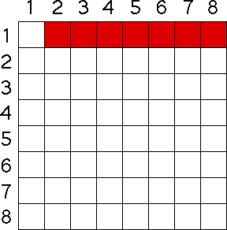

| Now we incorporate the competition effect. |
| First, competition
occurs between pairs of animals: |
| two fish trying to catch the same insect, |
| two lions trying to bring down the same wildebeest, |
| two catepillars trying to
eat the same blade of grass, |
| two students competing for the only A in the
class (just kidding ... maybe). |
|
| If C stands for the
competition factor, the population model becomes |
| Pn+1 = (1 + B - D)⋅Pn - C⋅(number of competitive pairs). |
| So how many competitive pairs are in a population of N animals? |
| For example, suppose the population consists of eight animals. |
| Animal 1 can compete with animal 2, with animal 3, ..., with animal 8. |
| Animal 1 cannot compete with itself, so
there are seven competitive pairs involving animal 1. |
| These are colored red in the chart. |
|  |